HƯỚNG DẪN THÊM MỚI HỒ SƠ NHẬP KHẨU
Thêm mới hồ sơ nhập khẩu là chức năng để người khai thực hiện phân tích chứng từ và tạo tờ khai Hải quan cho bộ hồ sơ nhập khẩu. Người khai truy cập vào menu Hồ sơ hải quan / Thêm mới hồ sơ nhập khẩu:
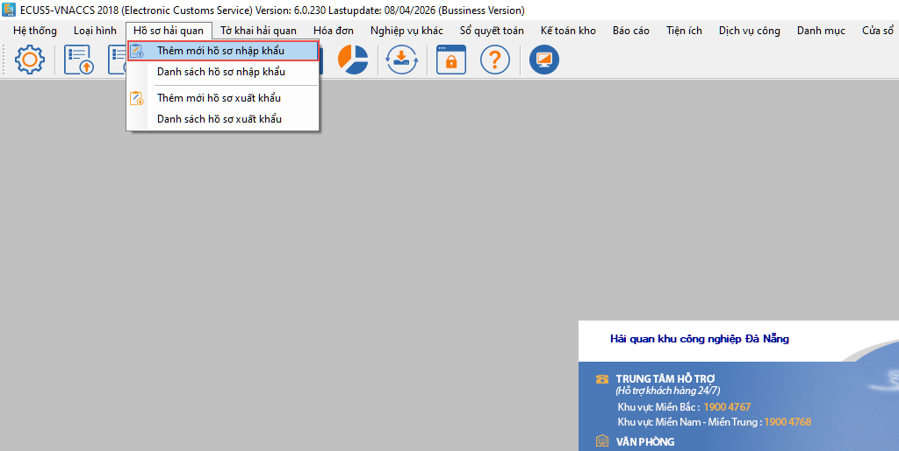
Hoặc nhấn nút Thêm mới / Thêm mới hồ sơ nhập khẩu ngay trên form danh sách hồ sơ:
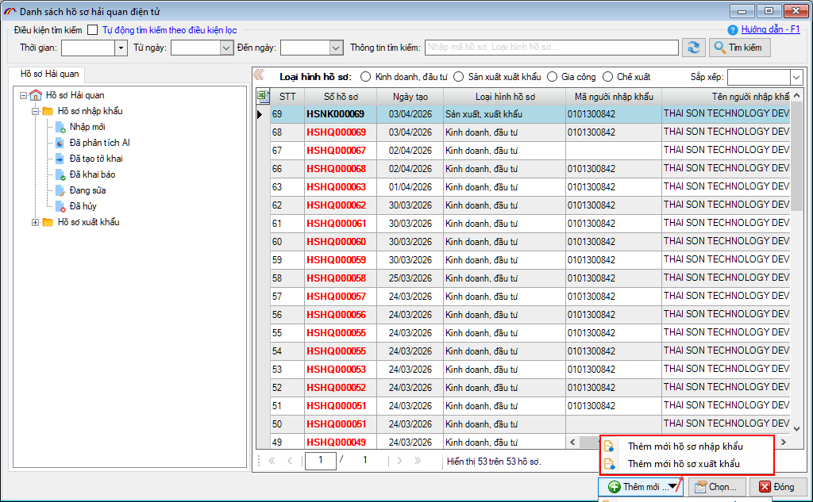
Màn hình giao diện thêm mới hồ sơ nhập khẩu hiện ra như sau:
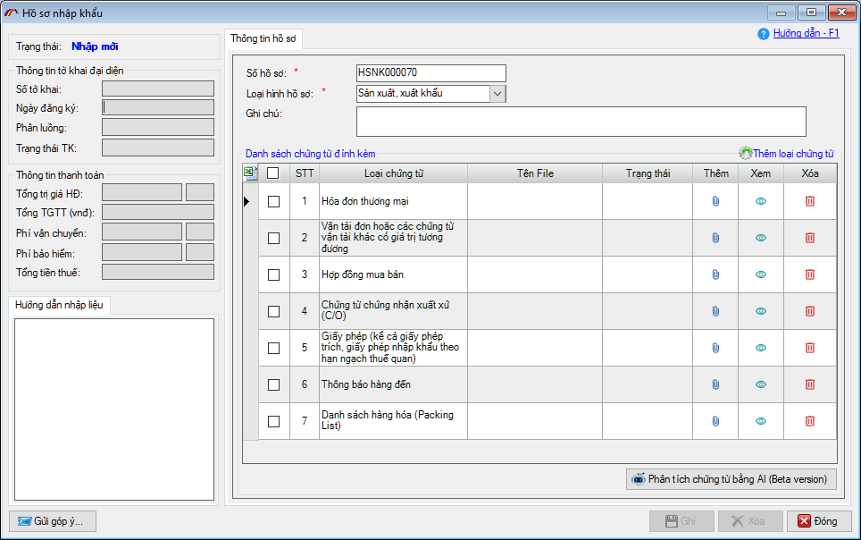
Lưu ý: nếu lần đầu thêm mới hồ sơ nhập khẩu, danh sách chứng từ đính kèm sẽ trống, chỉ hiển thị khi người dùng chọn loại hình hồ sơ. Từ các lần thêm mới sau, hệ thống tự động hiển thị và lấy theo loại hình hồ sơ của bộ hồ sơ gần nhất mà bạn thực hiện.
Bước 1 – Người khai đính kèm các file chứng từ của bộ hồ sơ
Tại giao diện chức năng, người khai chọn loại hình hồ sơ (Kinh doanh, Sản xuất xuất khẩu, Gia công, Chế xuất) để phần mềm đưa ra danh sách các chứng từ mặc định cần có:
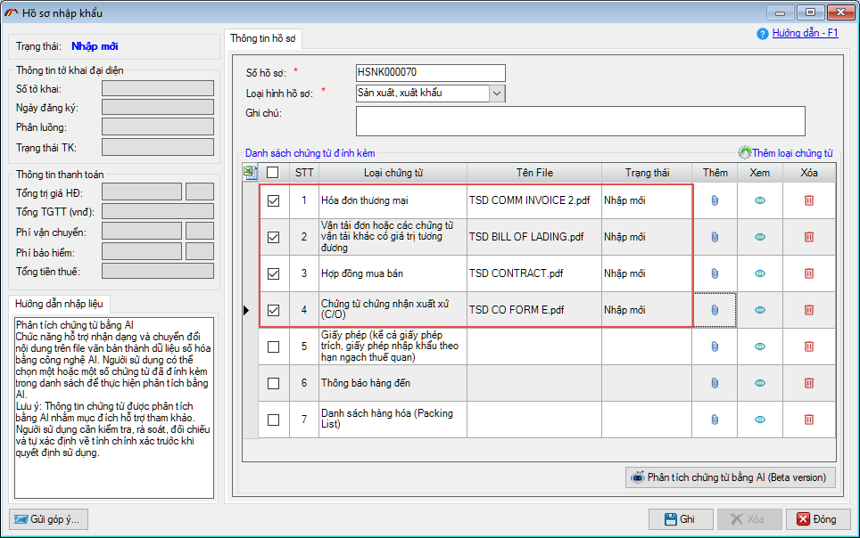
Bạn có thể bổ sung thêm chứng từ khác bằng cách nhấn vào Thêm loại chứng từ.
Người khai lần lượt đính kèm các file chứng từ đang có của bộ hồ sơ như: Hóa đơn, vận đơn, hợp đồng, C/O… bằng cách nhấn vào biểu tượng đính kèm tại cột Thêm.
Lưu ý: Định dạng file đính kèm phải là PDF, PNG hoặc JPG.
Lưu ý: Định dạng file đính kèm phải là PDF, PNG hoặc JPG.
Bước 2 – ECUS.AI tiến hành phân tích chứng từ tự động.
Khi đã đính kèm các file chứng từ của bộ hồ sơ, người khai nhấn vào nút Phân tích chứng từ bằng AI:
Lưu ý: Khi thực hiên phân tích chứng từ, hệ thống sẽ yêu cầu đăng nhập cho lần đầu của phiên làm việc, nếu chưa có tài khoản sử dụng dịch vụ ECUS.AI người khai tham khảo hướng dẫn đăng ký tài khoản sử dụng dịch vụ ECUS.AI
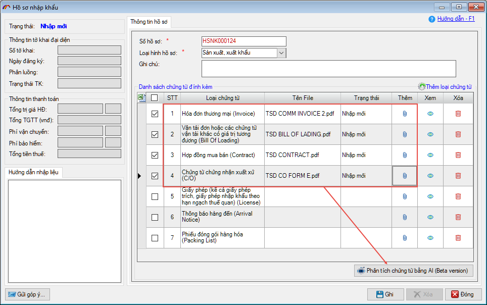
Khi quá trình phân tích kết thúc, người khai nhấn Xem kết quả (có thể xem chi tiết kết quả phân tích từng chứng từ bằng cách nhấn vào biểu tượng tại cột Xem):
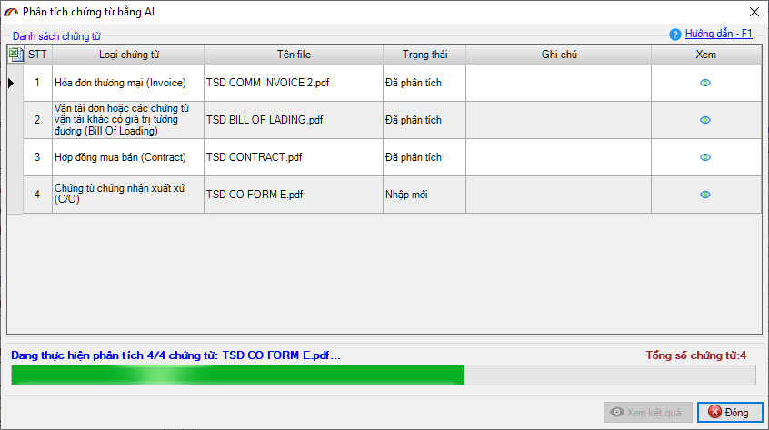
Lúc này sẽ quay về màn hình hồ sơ ban đầu, có thêm các tab Kết quả phân tích, Thông tin tờ khai và Thông tin hàng hóa:
Bước 3 – Kiểm tra kết quả phân tích và tạo tờ khai Hải quan.
Sau khi phân tích thành công, kết quả phân tích sẽ được hiển thị tại 3 tab bao gồm:
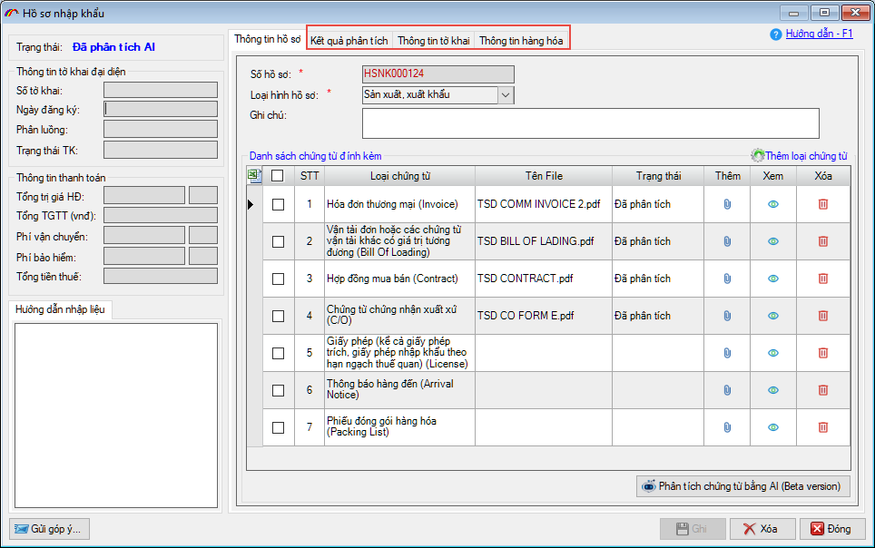
Thông tin kết quả phân tích
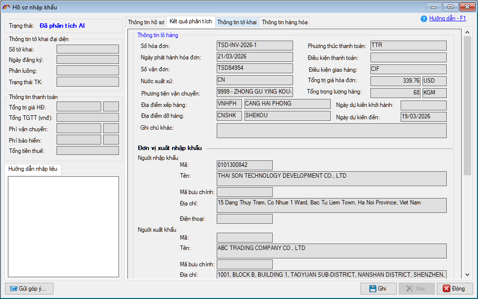
Người khai có thể kiểm tra, đối chiếu các tiêu chí thông tin của chứng từ gốc với kết quả phân tích một cách trực quan bằng cách nhấn vào biểu tượng tại cột Xem trong danh sách chứng từ ở phía dưới:
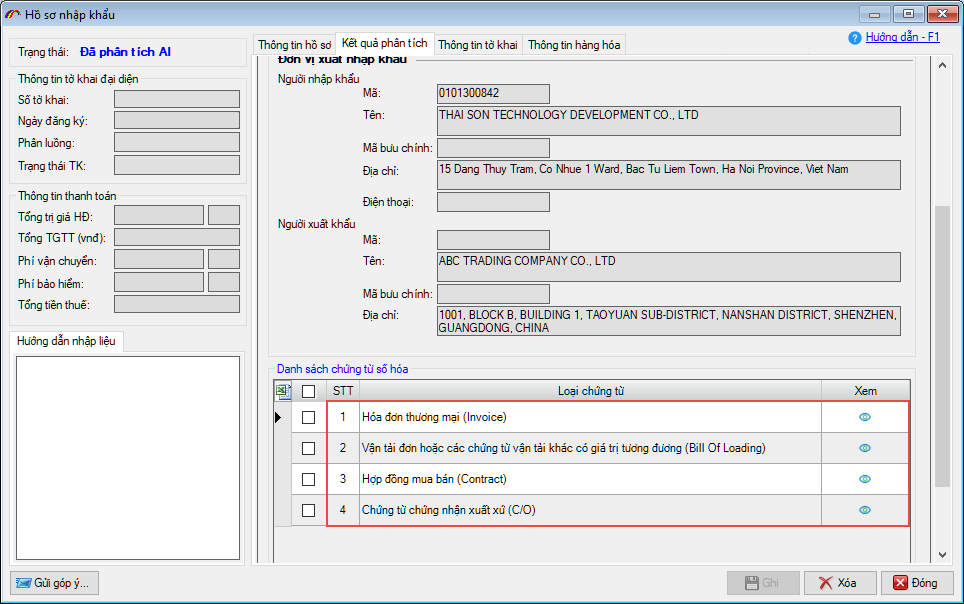
Thông tin tờ khai: Được hệ thống tự động điền vào các chỉ tiêu thông tin từ kết quả phân tích như: Mã hiệu phương thức vận chuyển, thông tin đối tác, vận đơn, hóa đơn, cảng cửa khẩu xếp dỡ hàng…
Nhóm loại hình và Mã loại hình được xác định tự động dựa vào loại hình hồ sơ mà người dùng đã chọn ở bước 1 khi thực hiện đính kèm các file chứng từ. Người khai có thể sửa, bổ sung thêm các chỉ tiêu chưa phù hợp nếu cần thiết.
Nhóm loại hình và Mã loại hình được xác định tự động dựa vào loại hình hồ sơ mà người dùng đã chọn ở bước 1 khi thực hiện đính kèm các file chứng từ. Người khai có thể sửa, bổ sung thêm các chỉ tiêu chưa phù hợp nếu cần thiết.
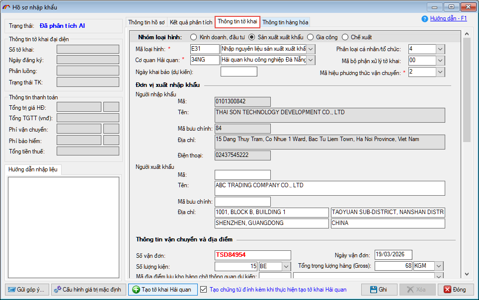
Với một số tiêu chí không có trên chứng từ để phân tích, người khai có thể thiết lập giá trị mặc định để khi tạo tờ khai, hệ thống sẽ đưa các giá trị này vào chỉ tiêu tương ứng trên tờ khai, người khai không phải nhập thủ công. Người khai cấu hình bằng cách nhấn vào nút Cấu hình giá trị mặc định:
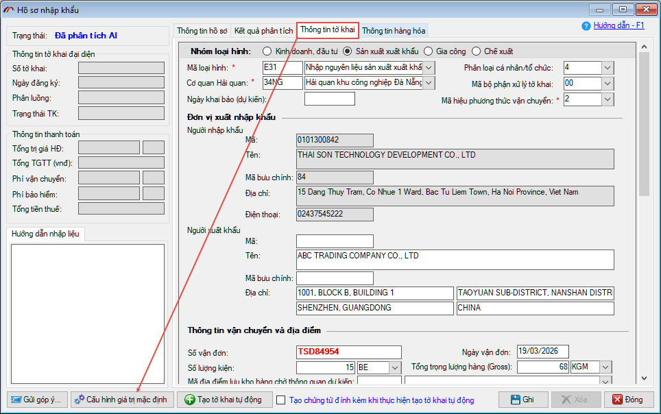
Tại đây, người khai có thể thiết lập giá trị mặc định cho các chỉ tiêu thông tin tờ khai nhập khẩu / xuất khẩu như: mã phân loại hàng hóa, mã phân loại tổ chức cá nhân, mã kết quả kiểm tra nội dung (container), mã phân loại hình thức hóa đơn, người nộp thuế, lý do đề nghị BP, chứng từ hạn mức…
Mục - Chuẩn hóa lại mã cảng, mã địa điểm: Khi đánh dấu tích chọn vào Chuẩn hóa mã theo tên cảng, địa điểm, hệ thống sẽ dựa vào tên cảng trên chứng từ để map thông tin trong danh mục cảng, địa điểm khai báo VNACCS để lấy ra mã cảng chính xác nhất (nếu người dùng không tích chọn, hệ thống sẽ lấy theo kết quả phân tích chứng từ của ECUS.AI để đưa vào tờ khai).
Lưu ý:
-
- Các tiêu chí có dấu * màu đỏ là các chỉ tiêu bắt buộc trên tờ khai, người dùng nên thiết lập.
- Việc thiết lập này tách riêng cho tờ khai nhập khẩu và xuất khẩu
- Người khai chỉ cần thiết lập 1 lần cho đến khi có thay đổi
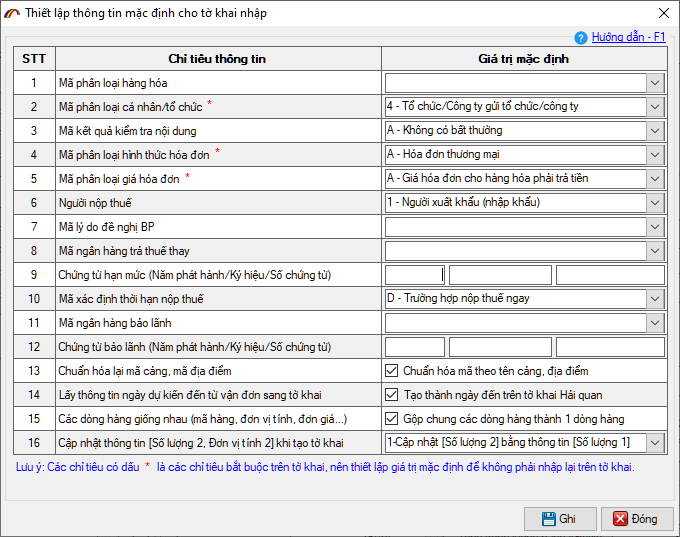
Thông tin hàng hóa
Thông tin hàng hóa được ECUS.AI tự động xác định mã số hàng hóa (HS code) dựa vào thông tin mô tả hàng hóa trên chứng từ, dịch tự động tên hàng sang Tiếng Việt và các thông tin về xuất xứ, số lượng, đơn vị tính, đơn giá, trị giá của hàng hóa.
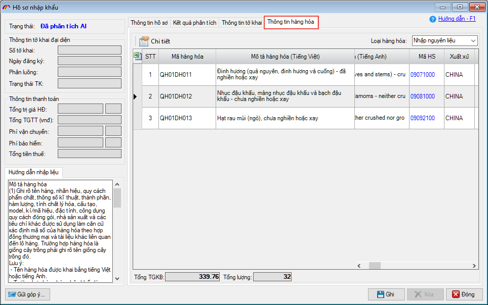
Ngoài ra, hệ thống còn đưa ra danh sách HS gợi ý với độ tin cậy cao để người dùng tham khảo và đưa ra quyết định sử dụng. Để xem danh sách HS gợi ý, người dùng nhấn nút Chi tiết để xem chi tiết dòng hàng:
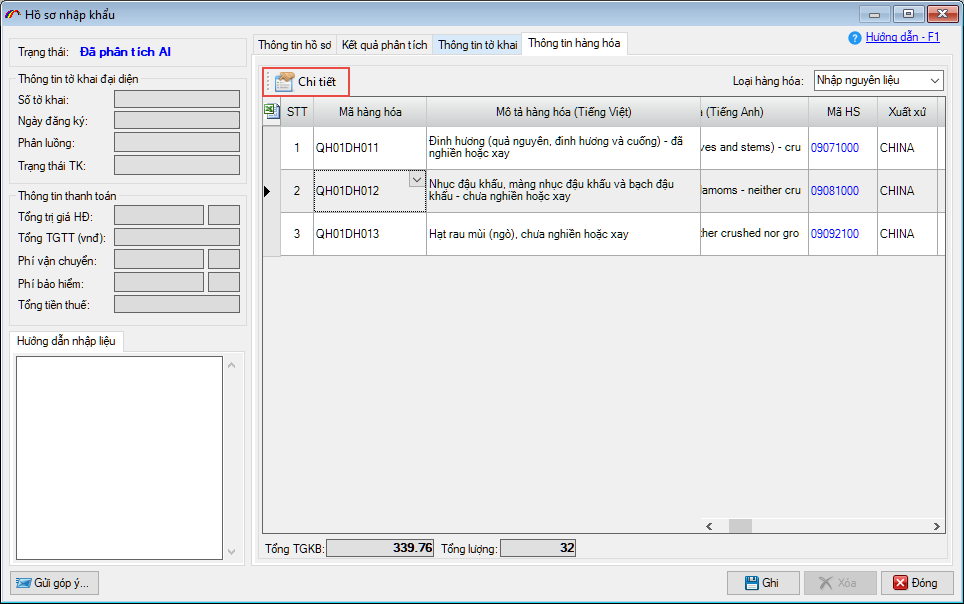
Tiếp tục nhấn nút Chi tiết tại chỉ tiêu mã số hàng hóa (HS):
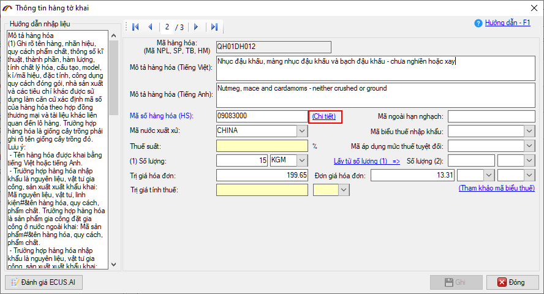
Màn hình danh sách HS gợi ý sẽ hiện ra:

Phía bên trái màn hình là danh sách các HS gợi ý kèm theo độ tin cậy, khi nhấn vào HS gợi ý, phía bên phải màn hình sẽ hiện ra các thông tin chi tiết liên quan như: Tên mô tả hàng hóa theo Chương, theo HS 4 số, 6 số và 8 số, cùng với mã biểu thuế XNK, thuế GTGT, các loại thuế nhập khẩu bổ sung khác kèm văn bản pháp luật để người dùng xem thông tin. Nếu thấy HS gợi ý nào phù hợp, đúng với thông tin hàng hóa hơn so với HS do AI tự xác định, người khai chọn và nhấn nút Áp dụng để thay thế.

Thực hiện tạo tờ khai Hải quan
Sau khi kiểm tra kết quả phân tích, nếu các thông tin đã chính xác, người khai nhấn nút: Tạo tờ khai Hải quan tại tab Thông tin tờ khai:
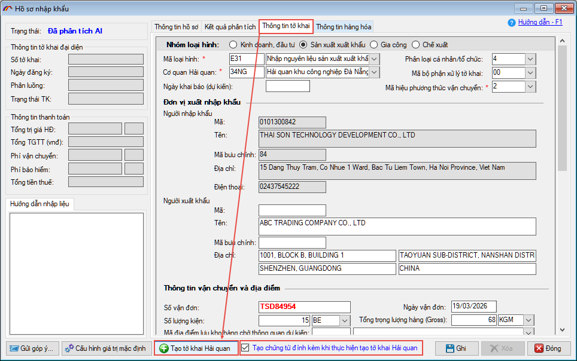
Lưu ý: Người khai đánh dấu tích chọn vào mục Tạo chứng từ đính kèm khi thực hiện tạo tờ khai Hải quan để phần mềm tạo các chứng từ đính kèm cho tờ khai.
Phần mềm sẽ hiện bảng thông báo lựa chọn hàng hóa cho tờ khai

Lựa chọn 1: Lấy thông tin hàng hóa trên chứng từ vào tờ khai.
Với lựa chọn này, phần mềm sẽ đưa toàn bộ thông tin hàng hóa hiện có trong tab Thông tin hàng hóa để đưa vào tờ khai.
Lựa chọn 2: Không lấy thông tin hàng hóa trên chứng từ vào tờ khai.
Với lựa chọn này, khi tạo tờ khai sẽ không bao gồm thông tin hàng hóa, người khai sẽ tự nhập thủ công danh sách hàng vào tờ khai (nhập thủ công, import từ excel, chọn từ danh mục…).
Lựa chọn 3: Nếu có mã hàng, lấy các thông tin trong danh mục tương ứng vào tờ khai (Gia công, SXXK)
Với lựa chọn này, phần mềm sẽ dựa vào mã hàng để MAP thông tin Tên hàng, đơn vị tính, mã số HS theo danh mục đã đăng ký trước đó. Lựa chọn này chỉ áp dụng đối với loại hình Gia công hoặc SXXK.
Cuối cùng, người khai đánh dấu tích chọn vào mục Tôi đã hiểu và đồng ý, sau đó nhấn nút Xác nhận để phần mềm tạo tờ khai Hải quan.

Sau khi phần mềm tạo tờ khai thành công, hệ thống sẽ đưa các kết quả phân tích vào chỉ tiêu thông tin tương ứng trên tờ khai, người khai kiểm tra, xác nhận các tiêu chí thông tin và tiến hành khai báo lên cơ quan Hải quan (đây là thêm mới hồ sơ nhập khẩu, do đó khi tạo tờ khai, hệ thống sẽ tạo tờ khai nhập khẩu IDA. Nếu muốn tạo tờ khai xuất khẩu thì người khai chọn thêm mới hồ sơ xuất khẩu hoặc theo quy trình 3 bước đã hướng dẫn tại đây)

Các thông tin trong tab Thông tin chung 2:

Thông tin danh sách hàng của tờ khai:

Các chứng từ đình kèm được tạo cùng khi tạo tờ khai, người khai kiểm tra tại tab Quản lý tờ khai:

Sau khi tờ khai được khai báo, người khai có thể khai các chứng từ đính kèm này ngay mà không cần phải nhập dữ liệu.
Doanh nghiệp xem thêm các hướng dẫn chi tiết về chức năng quản lý hồ sơ:
Bản quyền © thuộc về Công ty TNHH Phát triển công nghệ Thái Sơn